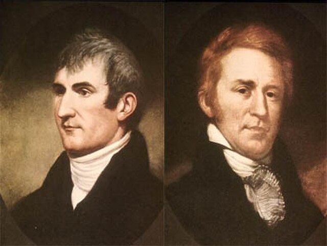

לואיס וקלארק
| המשלחת (Corps of Discovery): 1804 – 1806
חוקרי המערב האמריקאי מטעם תומאס ג'פרסון

לחץ על התמונה להגדלה
Lewis and Clark with Sacagawea | Source: Wikimedia Commons | License: Public Domain
מקור ומשמעות השמות (אטימולוגיה מורחבת)
מריווד'ר לואיס (Meriwether Lewis)
מריווד'ר (Meriwether): זהו שם פרטי חריג שנוצר למעשה משם משפחה אנגלי עתיק. מקורו בביטוי של ימי הביניים Merry weather (מזג אוויר שמח/עליז). במקור, זה היה כינוי לאדם בעל מזג אופטימי. למרות שמו, לואיס סבל רוב חייו מדיכאון קליני עמוק ("מלנכוליה"), שהוביל ככל הנראה להתאבדותו הטרגית זמן קצר לאחר המסע. הוא קיבל שם זה כדי לשמר את שם המשפחה של אמו (לוסי מריווד'ר).
לואיס (Lewis): הגרסה האנגלית לשם הצרפתי/גרמאני Louis (לודוויג), שמשמעותו "לוחם מפורסם". שם הולם לקצין צבא אמריקאי שנבחר אישית על ידי הנשיא.
ויליאם קלארק (William Clark)
ויליאם (William): מקורו בשם הגרמאני Wilhelm (רצון + קסדה/מגן), שמשמעותו "מגן נחוש". קלארק אכן היה ה"מגן" המעשי של המשלחת – שרטט מפות, פיקד על האנשים ודאג להישרדותם.
קלארק (Clark): שם משפחה אנגלי שמקורו במילה הלטינית Clericus (איש דת, פקיד). במקור, ניתן לאדם שהיה רשם או יודע קרוא וכתוב. באופן סמלי, קלארק היה הרשם הראשי של המשלחת, ויומניו המדויקים להפליא עובדתית (למרות שגיאות כתיב רבות) הם הבסיס לחקר המערב.
המדריכה הילידית: סאקאג'וויאה (Sacagawea)
האטימולוגיה המקובלת ביותר לשמה של הגיבורה המיתולוגית של המשלחת מגיעה משפת שבטה, ה"שושוני" (Shoshone). השם מורכב מהמילים Saca (סירה) ו-Gawea (מושך), או לחלופין מ-Sacaga (ציפור) ו-Wea (אישה).
המשמעות הרווחת והפואטית ביותר היא "אשת הציפור" (Bird Woman). כאישה צעירה, בת 16 בלבד שנשאה תינוק על גבה, היא אכן "פרשה כנפיים" והובילה את הגברים האירופאים בבטחה דרך ההרים הבלתי עבירים אל חוף האוקיינוס.
ילדות ורקע מוקדם: בני האליטה של וירג'יניה
לואיס וקלארק לא היו הרפתקנים מקריים. שניהם נולדו לאותה שכבה חברתית: משפחות פלנטרים (בעלי מטעים ועבדים) אמידות במדינת וירג'יניה, מוקד הכוח הפוליטי של ארה"ב הצעירה.
מריווד'ר לואיס: חניכו של הנשיא
לואיס היה שכן וידיד משפחה קרוב של הנשיא תומאס ג'פרסון. מגיל צעיר גילה עניין אובססיבי בבוטניקה ובאיסוף צמחים ביערות. לאחר שהתגייס לצבא ולחם ב"מרד הוויסקי", מונה ב-1801 על ידי הנשיא ג'פרסון לעוזרו ולמזכירו האישי בבית הלבן, שם גובשה תוכנית המשלחת.ויליאם קלארק: קצין השטח הקשוח
קלארק הגיע ממשפחה בעלת היסטוריה צבאית מפוארת (אחיו היה גיבור מלחמת העצמאות). הוא היה איש שטח מעולה, התגייס לצבא בגיל 19, נלחם נגד שבטים אינדיאנים (שם פגש לראשונה את לואיס) ונודע כשרטט מפות מחונן. לואיס גייס אותו למשלחת כמפקד שותף (Co-captain) בזכות הניסיון המעשי שלו בפיקוד חיילים.אידאולוגיה ומניעים: רכישת לואיזיאנה והחזון של ג'פרסון
המשלחת לא נולדה בחלל ריק. היא הייתה פרויקט הדגל של הנשיא תומאס ג'פרסון, שנבע משילוב של אידאולוגיה מדעית ומניעים פוליטיים אגרסיביים.
מדוע קנו ומדוע מכרו? הנשיא ג'פרסון רצה להבטיח את שליטת ארה"ב בנהר המיסיסיפי ובנמל ניו אורלינס הקריטי לחקלאים האמריקאים. מנגד, נפוליאון נאלץ למכור לאחר שספג תבוסה במרד העבדים בהאיטי, והיה זקוק למזומנים מהירים כדי לממן את מלחמותיו באירופה. ג'פרסון היה חייב לדעת מה בדיוק הוא קנה, ולכן המשלחת נשלחה למפות את השטח ולבסס ריבונות אמריקאית.
המסע המפרך אל האוקיינוס השקט (1804-1806)
"קורפס אוף דיסקברי" כללה כ-45 גברים, וכן את כלבו השחור הענק של לואיס ("סימן").
השלב הראשון: במעלה המיזורי והחורף עם סאקאג'וויאה
במאי 1804 יצאה המשלחת מסנט לואיס במעלה נהר המיזורי בסירות נהר קשות לתפעול. בחורף, הקור אילץ אותם לעצור ולהקים את "פורט מנדאן" בצפון דקוטה. שם הם שכרו את שירותיו של צייד צרפתי (שארבונו) כמתורגמן, אך הנכס האמיתי הייתה אשתו, סאקאג'וויאה, שהייתה בהריון. הימצאותה במשלחת עם תינוקה שידרה לשבטים העוינים כוונות שלום.
השלב השני: המפגש הגורלי וחציית הרוקי
בקיץ 1805, הם הגיעו למקורות המיזורי וגילו לתדהמתם קיר עצום של הרים מושלגים – הרי הרוקי (Rocky Mountains). ללא סוסים לחצייה, הם היו נידונים למוות. כשהם פגשו בשבט השושוני, התברר בנס שהצ'יף של השבט (קאמייאווייט) הוא אחיה האבוד של סאקאג'וויאה שנחטפה בילדותה! האיחוד המרגש הבטיח להם סוסים ומדריכים שבלעדיהם לא היו שורדים את החצייה הקטלנית של רכס הביטררוט (Bitterroot Range).
השלב השלישי: ההגעה לאוקיינוס והשיבה
בנובמבר 1805, לאחר מסע ארוך בסירות קאנו במורד נהר הקולומביה, הם הגיעו לחוף המערבי. קלארק כתב ביומנו: "Ocian in view! O! the joy". הם העבירו חורף אומלל באורגון ובמרץ 1806 החלו לחזור. בספטמבר 1806 חזרו לסנט לואיס כגיבורים לאומיים, לאחר שעברו יותר מ-13,000 קילומטרים.
עולם חדש של ידע: גילויים וטופונימיה
1. מיפוי גיאוגרפי והידרולוגי
קלארק שרטט מפה מפורטת ביותר ששינתה את התפיסה הגיאוגרפית של היבשת והראתה את העוצמה של הרי הרוקי. הם מיפו את מקורות נהרות המיזורי והקולומביה, חקרו את זרימת המים ואפשרו את ההתפשטות האמריקאית העתידית אל האזורים הלא מוכרים.2. גילויים אקולוגיים (מעל 300 מינים חדשים)
לואיס, שהיה בוטנאי מחונן, אסף למעלה מ-300 מינים חדשים של צמחים ובעלי חיים שלא היו מוכרים למדע. בין התגליות הבוטניות היו זרעי אורן פונדרוזה ואשוח דאגלס ששינו את החקלאות האמריקאית.3. טופונימיה: מתן הכינויים הגיאוגרפיים והעממיים
מכיוון שהיו אנשי שטח, הדרך שבה נתנו שמות לחיות ולמקומות הונעה מצרכים תיאוריים ופוליטיים:
- כינויים עממיים לבעלי חיים: הם המציאו כינויים תיאוריים באנגלית. כמעט נטרפו על ידי דוב עצום ואפור, וקראו לו "דוב הגריזלי" (Grizzly Bear) מהמילה Grisley (מחריד). למכרסמים נבחנים שחיו במושבות קראו "כלבי ערבה" (Prairie Dog) למרות שהם סנאים.
- השמות המדעיים (לטינית): לואיס וקלארק לא קבעו את השמות הלטיניים-מדעיים. הם שלחו את הפוחלצים והזרעים למדענים במזרח ארה"ב, ואלו סיווגו אותם והעניקו להם שם מדעי.
- שמות פוליטיים לגיאוגרפיה: כדי לזכות בתמיכה פוליטית, הם קראו לנהרות על שם מנהיגים. את פיצול המיזורי לשלושה נהרות הם כינו: נהר הנשיא (ג'פרסון), שר החוץ (מדיסון) ושר האוצר (גאלאטין). במקביל, הם לעיתים קרובות התעלמו לחלוטין מהשמות הילידיים המקוריים שנתנו השבטים המקומיים לאותם הרים ונהרות במשך אלפי שנים.
מקורות וביבליוגרפיה (אימות מחקר אקדמי)
- "The Journals of the Lewis and Clark Expedition" (בעריכת Gary E. Moulton): הכרכים המלאים של היומנים המקוריים. אלו העדויות לחקר המיזורי, למפגש של סאקאג'וויאה עם אחיה, ולכינויים העממיים השונים שטבעו (הגריזלי, כלב הערבה).
- "Undaunted Courage" (Stephen E. Ambrose, 1996): הביוגרפיה המוערכת ביותר של לואיס, המנתחת את רכישת לואיזיאנה מנפוליאון, החזון של ג'פרסון, והדיכאון של לואיס.
- הארכיון הלאומי של ארה"ב (NARA): מתעד את פרטי רכישת לואיזיאנה ואת המנדט הדיפלומטי שניתן למשלחת מול השבטים הילידים.